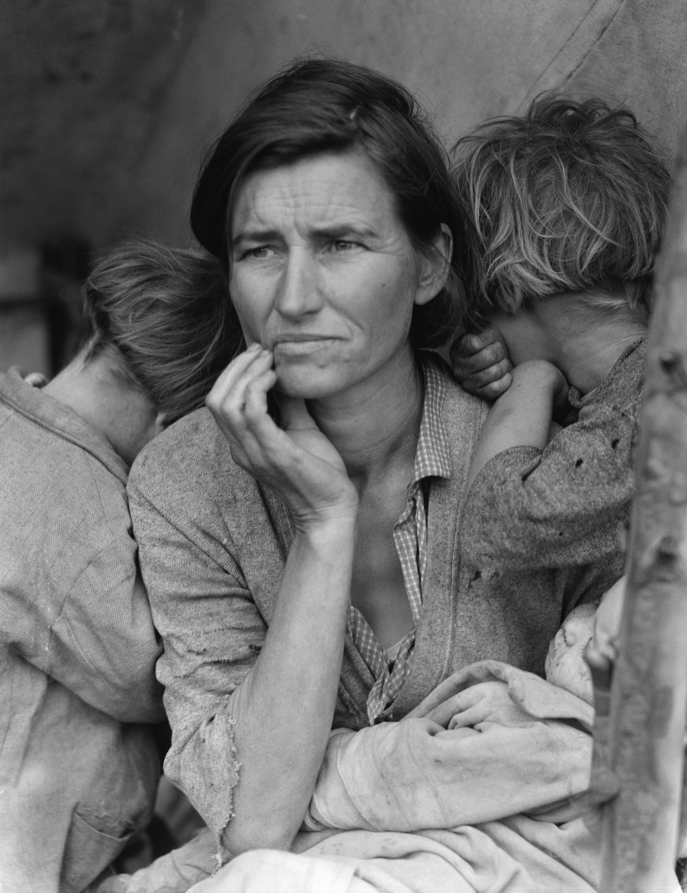

THE PEOPLE BEHIND THE PICTURES
A world seen
through their eyes.
Meet the photographers who changed how we see.
Discover their stories. Look closer at their work.
SIX PHOTOGRAPHERS. MANY WAYS TO SEE.
More than a picture.
A point of view.
From the streets of Paris to the mountains of the American West, a photograph can preserve a place, reveal a life or ask us to think differently. Start with the people who made these images.
A PLACE TO BEGIN
Three different perspectives.

Landscape
Ansel Adams
Mountain light. Deep shadows. A landscape made unforgettable.
Discover the photographer
Documentary
Dorothea Lange
Human stories, told with attention and empathy.
Discover the photographer
Portrait
Julia Margaret Cameron
A face becomes a study of character and light.
Discover the photographer